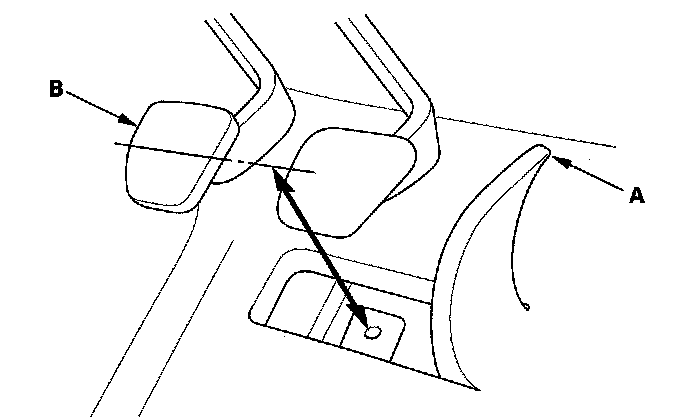
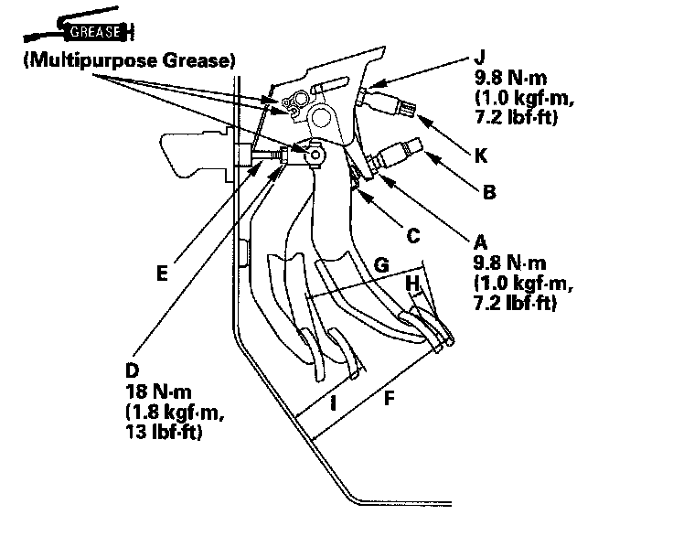

Clutch Switch: Adjustments
Clutch Pedal, Clutch Pedal Position Switch, and Clutch Interlock Switch AdjustmentNOTE:
^ Check the clutch pedal position switch.
^ Check the clutch interlock switch.
^ The clutch is self-adjusting to compensate for wear.
^ If there is no clearance between the master cylinder piston and pushrod, the release bearing will be held against the diaphragm spring, which can result in clutch slippage or other clutch problems.
1. Lift up the carpet (A). At the insulator cutout, measure the pedal height from the right side of the pedal pad (B).

2. Loosen the clutch pedal position switch locknut (A), and back off the clutch pedal position switch (B) until it no longer touches the clutch pedal (C).

3. Loosen the clutch pushrod locknut (D), and turn the pushrod (E) in or out to get the specified height (F), stroke (G), free play (H), and disengagement height (I) at the clutch pedal.
Clutch Pedal Stroke: 130 - 140 mm (5.12 - 5.51 in.)
Clutch Pedal Free
Play: 10 - 18 mm (0.39 - 0.71 in.)
Clutch Pedal Height: 157 mm (6.18 in.)
Clutch Pedal
Disengagement
Height: 77 mm (3.03 in.)
4. Tighten the clutch pushrod locknut.
5. With the clutch pedal released, turn in the clutch pedal position switch until it contacts the clutch pedal.
6. Turn in the clutch pedal position switch an additional 3/4 to 1 turn.
7. Tighten the clutch pedal position switch locknut.
8. Loosen the clutch interlock switch locknut (J).
9. Press the clutch pedal to the floor.
10. Release the clutch pedal 9 - 12 mm (0.35 - 0.47 in.) from the fully pressed position, and hold it there. Adjust the position of the clutch interlock switch (K) so the engine will start with the clutch pedal in this position.
11. Tighten the clutch interlock switch locknut.